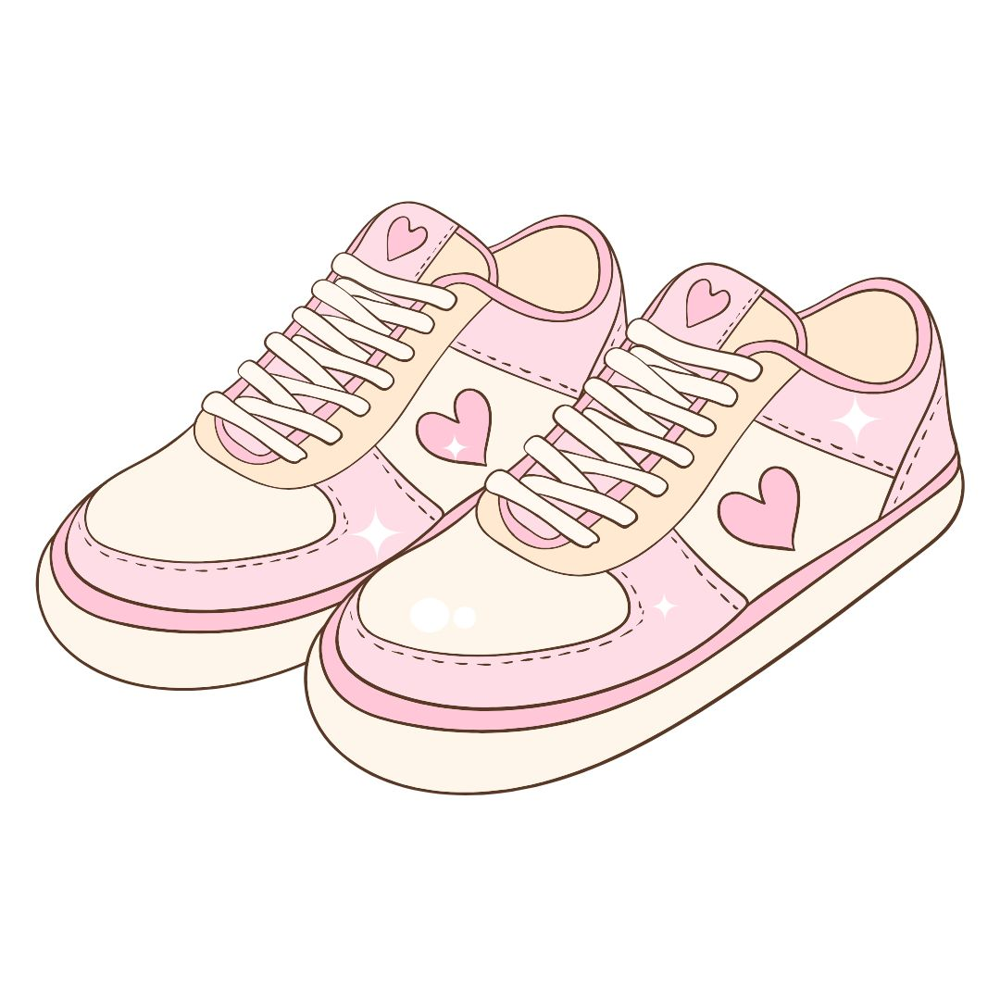

Laundry Sepatu Jakarta
Jasa cuci dan perawatan sepatu profesional di Jakarta.
Hubungi Kami
Laundry Sepatu Jakarta
Kami menyediakan jasa laundry sepatu Jakarta untuk membantu menjaga
sepatu tetap bersih, rapi, dan terawat. Layanan kami mencakup
fast cleaning, deep cleaning, dan perawatan khusus untuk sepatu berbahan suede.
Setiap sepatu membutuhkan perawatan yang berbeda. Karena itu, proses
pembersihan disesuaikan dengan jenis bahan dan kondisi sepatu agar
hasilnya tetap maksimal.
Layanan Kami

Deep Cleaning
Membersihkan sepatu secara menyeluruh dari kotoran dan noda.
Fast Cleaning
Layanan pembersihan cepat untuk perawatan ringan.

Perawatan Suede
Perawatan khusus untuk sepatu berbahan suede.
Kenapa Pilih Kami?
🧼
Pembersihan Profesional
Proses pembersihan disesuaikan dengan bahan sepatu.
👟
Aman untuk Sepatu
Perawatan dilakukan dengan memperhatikan material sepatu.
⚡
Pengerjaan Cepat
Proses pengerjaan dibuat efisien dan praktis.
💗
Hasil Maksimal
Kami mengutamakan kebersihan dan kerapian sepatu.
Harga Laundry Sepatu
Fast Cleaning
Rp25.000
Cocok untuk perawatan ringan.
Deep Cleaning
Rp40.000
Pembersihan menyeluruh untuk sepatu.
Suede Care
Rp50.000
Perawatan khusus sepatu berbahan suede.
Area Laundry Sepatu Jakarta
Kami melayani kebutuhan laundry dan perawatan sepatu
di berbagai area Jakarta. Layanan tersedia untuk
perawatan sepatu sehari-hari, deep cleaning, dan
perawatan khusus sesuai jenis bahan sepatu.
Area layanan mencakup Jakarta Pusat, Jakarta Selatan,
Jakarta Barat, Jakarta Timur, dan Jakarta Utara.